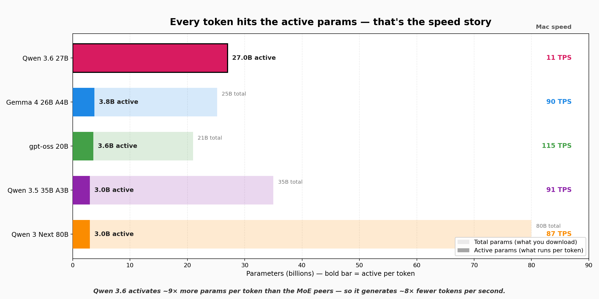

The LLM Time Machine
Open-weight LLMs don't follow the silicon curve. Between September 2024 and April 2026 the best models you could run locally got smaller, faster, and smarter — all at once — on the same consumer hardware you already owned.
To prove it, we benchmarked the open-weight timeline on one specific box: a 128GB M5 Max MacBook Pro. Same RAM. Same bandwidth. Same thermal envelope. The models did all the work.
Section 1 · The rearview
Every dot below is a notable open-weight model released between July 2023 and today. The size of the dot is total parameters. The fill is dense (solid) vs. MoE (outline). Pick a RAM budget — only models that actually fit in that budget are shown. Switch the Y-axis to see different benchmarks.
The unlock most people miss: in late 2023, the best model that fit in 128GB of RAM scored ~35 on MMLU-Pro. In April 2026 it scores 86 — with no hardware change. That's not a silicon win. It's architecture + training + quantization, all compounding on fixed hardware.
Section 2 · Head-to-head on fixed hardware
Same publisher (Alibaba's Qwen line). Both dense. Both the flagship of their era. Same 128GB box. The 2026 model is 63% smaller and 2.7× faster while scoring 21% higher on MMLU-Pro and 79% higher on GPQA Diamond. That is algorithmic progress — not silicon progress.
September 2024
The reigning dense flagship for open-weight users in 2024. Felt like the ceiling of what a consumer box could do.
April 2026
Closes PRs. Solves Olympiad math. Ties Claude 4.5 Opus on Terminal-Bench 2.0. All on less silicon than a 2-year-old machine.
Same machine. Same RAM. Same disk. Same bandwidth. Same power draw. Smaller, faster, and dramatically smarter — in 18 months.
Section 3 · Why is this happening?
Multi-Token Prediction, Gated DeltaNet, hybrid state-space models, extreme-sparsity MoE. A 2026 27B dense uses its weights smarter than a 2024 70B did. Expect another 2–3× effective quality per active parameter in the next 18 months.
Q4_K_M is ~95% the quality of full precision at 25% the size. New 2-bit research quants (QTIP, SpinQuant, 1.58-bit) push toward another 2× compression at Q4-like quality. Your RAM keeps "growing."
Better curation, synthetic data from frontier models, reinforcement learning with verifiable rewards (RLVR). A modern 27B sees vastly higher-quality training signal than a 2023 70B did.
The biggest open secret. Distillation from frontier closed models (Claude, GPT-5) into open-weight students, aggressive RLHF, chain-of- thought injection. Most of a model's "feel" comes from here — and it's the most rapidly improving stage.
All four of these happen on your silicon. All four compound. None of them require you to buy anything.
Section 4 · The dense vs MoE story
In April 2026, Qwen 3.6 27B (dense) beats every MoE peer on benchmarks — including an 80B MoE. Running locally, it's also dead last on generation speed. Both facts have the same cause: Qwen 3.6 activates all 27B parameters for every token. MoE peers activate ~3B.

Dense pays per token in latency to deliver per-token intelligence. MoE pays in total RAM footprint to deliver per-token speed. A 128GB-class box handles either architecture comfortably — which is why consumer hardware is surprisingly future-proof for local inference.
Section 5 · The windshield
The standard "open-weight will catch up to closed frontier" projection is already outdated. Qwen 3.6 27B ties or beats Claude 4.5 Opus on multiple hard benchmarks today — Terminal-Bench 2.0, GPQA Diamond, and SWE-bench Verified are all in Opus territory. Parity isn't a future milestone — it's the starting line for what comes next.
April 2027 (est.)
April 2028 (est.)
Caveat: Projections are extrapolation from observed trends, not predictions of specific models. Some of these gains will happen faster than written (the Qwen 3.5 → 3.6 jump was 2 months, not 12); some may stall. But every lever (architecture, quantization, post-training) has years of runway left. The surprise would be if progress slowed, not continued.
Plan to download a new flagship every 3–6 months. That's where all your gains come from now.
Keep both on disk. Route reasoning / coding work to Qwen 3.6 27B dense. Route agent loops + autocomplete to Qwen 3.5 35B-A3B or gpt-oss 20B.
The "AI is stuck" narrative focuses on closed frontier scaling. Meanwhile the local open-weight world is compounding gains on fixed hardware. That's the under-covered story.